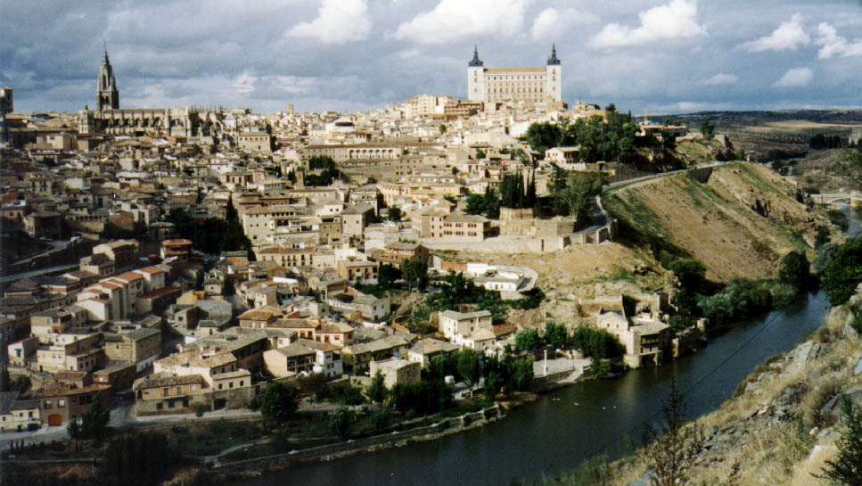

Introducere
Repere geografice
Clima
Geografia politică
Vegetația
Fauna
Relieful
Rețeaua hidrografică
|
Introducere

Spania este poziționată în Europa Occidentală și ocupă cea mai mare parte a Peninsulei Iberice, precum și două arhipelaguri (Insulele Canare în Oceanul Atlantic, respectiv Insulele Baleare în Marea Mediterană) și două orașe (Ceuta și Melilla) în nordul Africii, precum și alte insule de dimensiuni reduse situate în vecinătatea țării. Se situată între restul continentului european și Africa și între două zone de influență, Mediteraneeană în est și atlantică în vest, lucru care determină și gradul ridicat de varietate:
- Relieful: se întâlnesc toate ciclurile orogenetice și de sedimentare care s-au manifestat de-a lungul istoriei, determinând forme specifice.
- Clima: derivă din poziția peninsulară, fiind expusă maselor de aer reci și calde, proporția dintre acestea rezultând într-un tip climat sau altul. Astfel, în nord se întâlnește un climat de tip oceanic (mai rece și mai umed), în est și sud unul de tip mediteraneean (cu precipitații mai reduse și cu ierni mai calde), iar în centru se întâlnește un climat continental (cu precipitații reduse și temperaturi ridicate vara și scăzute iarna).
- Vegetația: este influențată de particularitățile climatice, întălnindu-se astfel specii adaptate condițiilor de ariditate (xerofile), caracteristice centrului Spaniei și specii adaptate condițiilor de umiditate (hidrofile), caracteristice nordului țării.
- Populația: multitudinea incursiunilor diverselor popoare (romani, celți, musulmani), precum și întrepătunderea dintre acestea au determinat cultura și valorile umane.
|